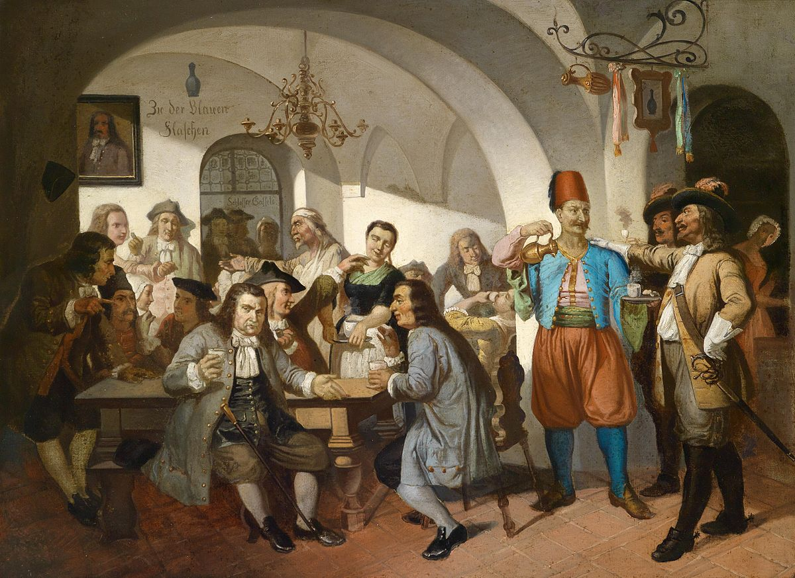
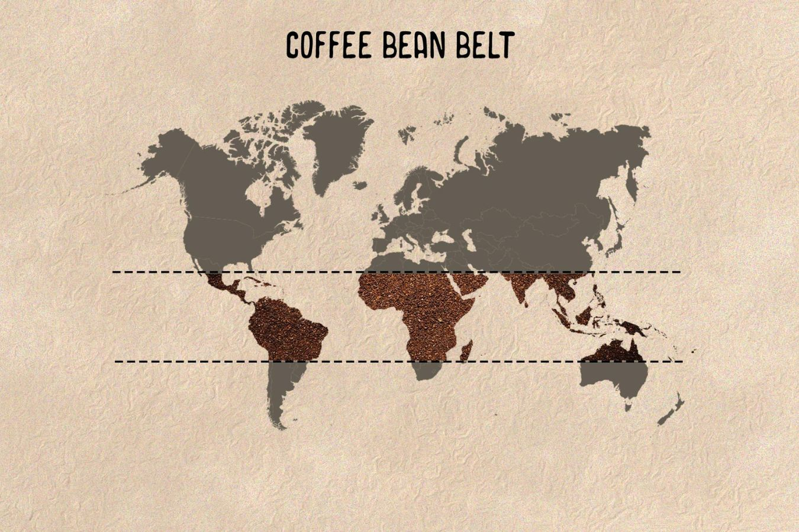

Discovered in Ethiopia as the “magic fruit,” and reaching the land of the Ottomans through Yemen in the 15th century, coffee soon assumed its place as a prestigious beverage in the palace and wealthy households. Over time, coffee not only generated its own rituals and ceremonies, but also played an instrumental role in the development of social life.
The Ethiopian Legend or Origins
in Yemen?
Ethiopia is often regarded as the birthplace of coffee. If you've ever searched for "coffee history," you've likely encountered the well-known tale of coffee's origin in Ethiopia, attributed to Kaldi, an Ethiopian goat herder, around the year 800 AD.
There are also a few well-known stories about Yemen’s contribution in the founding of coffee. It’s later largely believed that Yemeni traders brought coffee plants back to their homeland and began to grow them there.

Scientific name: Coffea
https://www.behance.net/gallery/40450175/Coffee-Plant/modules/244676935
Into the Arabian World
After arriving in Yemen in the 15th century, coffee cultivation began in the Arabian region. In 1475, the world's first coffeehouse, known as "Kaveh Kanes," emerged in Mecca.
Although initially established for religious purposes, these places quickly became popular destinations for people's leisure and entertainment. By the 16th century it was known in Persia, Egypt, Syria, and Turkey.
Over to Europe
The history of coffee in Europe commenced in Italy, where it was introduced from the Ottoman Empire. Venetian merchants played a pivotal role in spreading the popularity of coffee across European regions. In 1645, the first European coffeehouse was established in Venice, marking a significant moment in coffee's European journey. Coffee consumption became a coveted luxury, particularly among the affluent.

The Blue Bottle Coffee House:
https://en.wikipedia.org/wiki/The_Blue_Bottle_Coffee_House
The New World and Coffee Plantation
Growing coffee in Europe was a struggle, due to its naturally colder climates. The New World's hot, tropical weather was seen as a new ideal for the cultivation of coffee, and coffee plantations quickly spread throughout Central America and Latin America, with their first coffee harvest occurring in 1726.
In the mid-18th century, Latin American nations transformed into leading coffee producers, capable of clearing vast tropical forests to establish plantations. Today, Brazil stands as the world's largest coffee producer.
The Bean Belt
Over 2.25 billion cups of coffee are consumed in the world daily. Nearly 70 coffee-producing countries, spanning various continents, are situated along an imaginary belt known as the coffee bean belt. This belt is positioned between 23.5 degrees north and south latitude and encircles the Earth along the equator. These nations enjoy the advantages of tropical climates, making them ideal environments for coffee cultivation.

The Bean Belt
https://www.helenacoffee.vn/coffee-bean-belt/